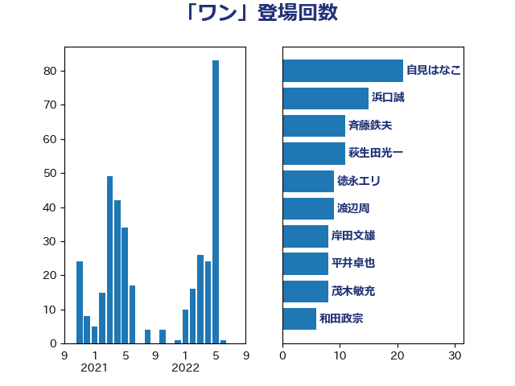

単語「ワン」

| 自見はなこ | 自由民主党 | 21 回 |
| 浜口誠 | 国民民主党 | 15 回 |
| 斉藤鉄夫 | 公明党 | 11 回 |
| 萩生田光一 | 自由民主党 | 11 回 |
| 徳永エリ | 立憲民主党 | 9 回 |
| 渡辺周 | 立憲民主党 | 9 回 |
| 岸田文雄 | 自由民主党 | 8 回 |
| 平井卓也 | 自由民主党 | 8 回 |
| 茂木敏充 | 自由民主党 | 8 回 |
| 和田政宗 | 自由民主党 | 6 回 |
| 城井崇 | 立憲民主党 | 6 回 |
| 山田太郎 | 自由民主党 | 6 回 |
| 松山政司 | 自由民主党 | 6 回 |
| 西村康稔 | 自由民主党 | 6 回 |
| 上川陽子 | 自由民主党 | 5 回 |
| 山井和則 | 立憲民主党 | 5 回 |
| 杉尾秀哉 | 立憲民主党 | 4 回 |
| 東徹 | 日本維新の会 | 4 回 |
| 赤羽一嘉 | 公明党 | 4 回 |
| 古川俊治 | 自由民主党 | 3 回 |
| 吉田統彦 | 立憲民主党 | 3 回 |
| 国定勇人 | 自由民主党 | 3 回 |
| 宮崎政久 | 自由民主党 | 3 回 |
| 小泉進次郎 | 自由民主党 | 3 回 |
| 牧原秀樹 | 自由民主党 | 3 回 |
| 猪口邦子 | 自由民主党 | 3 回 |
| 田村憲久 | 自由民主党 | 3 回 |
| 田村智子 | 日本共産党 | 3 回 |
| 菅家一郎 | 自由民主党 | 3 回 |
| 遠藤敬 | 日本維新の会 | 3 回 |
| 高橋千鶴子 | 日本共産党 | 3 回 |
| たがや亮 | れいわ新選組 | 2 回 |
| 大西健介 | 立憲民主党 | 2 回 |
| 奥下剛光 | 日本維新の会 | 2 回 |
| 宮本徹 | 日本共産党 | 2 回 |
| 寺田学 | 立憲民主党 | 2 回 |
| 小西洋之 | 立憲民主党 | 2 回 |
| 掘井健智 | 日本維新の会 | 2 回 |
| 本田顕子 | 自由民主党 | 2 回 |
| 杉本和巳 | 日本維新の会 | 2 回 |
| 松原仁 | 立憲民主党 | 2 回 |
| 柚木道義 | 立憲民主党 | 2 回 |
| 西村智奈美 | 立憲民主党 | 2 回 |
| 鈴木義弘 | 国民民主党 | 2 回 |
| 井坂信彦 | 立憲民主党 | 1 回 |
| 伊藤渉 | 公明党 | 1 回 |
| 伴野豊 | 立憲民主党 | 1 回 |
| 前川清成 | 日本維新の会 | 1 回 |
| 勝俣孝明 | 自由民主党 | 1 回 |
| 勝目康 | 自由民主党 | 1 回 |
| 北神圭朗 | 無所属 | 1 回 |
| 古賀友一郎 | 自由民主党 | 1 回 |
| 塩村あやか | 立憲民主党 | 1 回 |
| 大串博志 | 立憲民主党 | 1 回 |
| 大島敦 | 立憲民主党 | 1 回 |
| 安達澄 | 無所属 | 1 回 |
| 山口壯 | 自由民主党 | 1 回 |
| 山岸一生 | 立憲民主党 | 1 回 |
| 山崎誠 | 立憲民主党 | 1 回 |
| 山本博司 | 公明党 | 1 回 |
| 平木大作 | 公明党 | 1 回 |
| 平林晃 | 公明党 | 1 回 |
| 斎藤洋明 | 自由民主党 | 1 回 |
| 日下正喜 | 公明党 | 1 回 |
| 杉久武 | 公明党 | 1 回 |
| 枝野幸男 | 立憲民主党 | 1 回 |
| 柴田巧 | 日本維新の会 | 1 回 |
| 森山浩行 | 立憲民主党 | 1 回 |
| 榛葉賀津也 | 国民民主党 | 1 回 |
| 浅田均 | 日本維新の会 | 1 回 |
| 浅野哲 | 国民民主党 | 1 回 |
| 渡辺猛之 | 自由民主党 | 1 回 |
| 漆間譲司 | 日本維新の会 | 1 回 |
| 牧島かれん | 自由民主党 | 1 回 |
| 田島麻衣子 | 立憲民主党 | 1 回 |
| 田村まみ | 国民民主党 | 1 回 |
| 矢倉克夫 | 公明党 | 1 回 |
| 石井正弘 | 自由民主党 | 1 回 |
| 石井章 | 日本維新の会 | 1 回 |
| 空本誠喜 | 日本維新の会 | 1 回 |
| 竹内譲 | 公明党 | 1 回 |
| 笠井亮 | 日本共産党 | 1 回 |
| 篠原孝 | 立憲民主党 | 1 回 |
| 細田健一 | 自由民主党 | 1 回 |
| 緑川貴士 | 立憲民主党 | 1 回 |
| 藤井比早之 | 自由民主党 | 1 回 |
| 藤原崇 | 自由民主党 | 1 回 |
| 藤岡隆雄 | 立憲民主党 | 1 回 |
| 西岡秀子 | 国民民主党 | 1 回 |
| 谷田川元 | 立憲民主党 | 1 回 |
| 重徳和彦 | 立憲民主党 | 1 回 |
| 野村哲郎 | 自由民主党 | 1 回 |
| 野田佳彦 | 立憲民主党 | 1 回 |
| 鈴木英敬 | 自由民主党 | 1 回 |
| 長妻昭 | 立憲民主党 | 1 回 |
| 門山宏哲 | 自由民主党 | 1 回 |